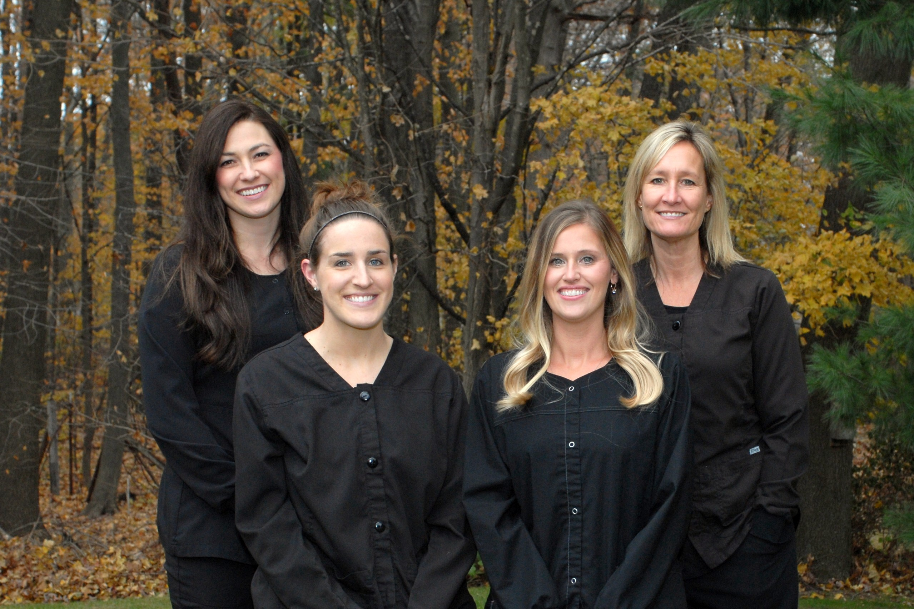
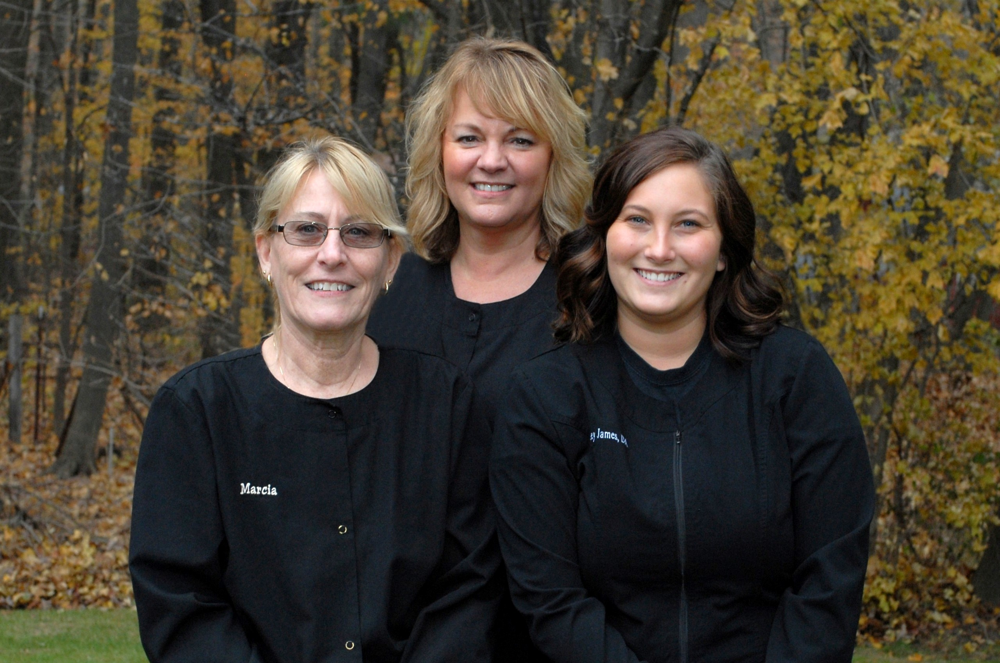

<section class="main-section">
  <section class="jumbotron staff-section-jumbotron">
    <div class="jumbotron-content-container">
      <span class="main-border"></span>
      <h1 class="jumbotron-header">Meet the Staff</h1>
      <span class="main-border"></span>
    </div>
  </section>

  <section class="staff">
    <div class="doc-grp">
      <div class="doc">
        
        <aside class="doc-para">
          <h3 class="doc-grp-header">Dr. Donna Rick, D.D.S., P.C.</h3>
          <p>Dr. Rick has been practicing in Fruitport since 1989, after graduating from both the Dental Hygiene and Dental School at the University of Michigan. She is the mother of four children: Chelsea, Peter (Duie), Noah, and Keon. In her free time, Dr. Rick is also a lay pastor and enjoys ministering and giving back to the community. Dr. Rick is a member of the American Dental Association, Michigan Dental Association, Muskegon District Dental Society, and Academy of General Dentistry. </p>
        </aside>
      </div>
      <div class="doc">
        
        <aside class="doc-para">
          <h3 class="doc-grp-header">Dr. Chelsea Klipfel, D.D.S., P.L.L.C.</h3>
          <p>Dr. Klipfel grew up working here in the office since she was a little girl. Many remember her in the back room as a baby, working at the front desk in grade school, working in the back sterilizing instruments and developing x-rays in middle school, and being a chairside assistant throughout high school and her undergraduate career. Dr. Klipfel has returned to the office after graduating from the University of Michigan School of Dentistry. In her free time, Dr. Klipfel enjoys being outdoors, hunting, and spending time with her family and her pets! Dr. Klipfel is a member of the American Dental Association, Michigan Dental Association, Muskegon District Dental Society, and Academy of General Dentistry.</p>
        </aside>
      </div>
    </div>
    <div class="staff-group doc2">
      
      <aside class="staff-para">
        <h3 class="staff-grp-header">Hygienists - Amy H., Mandi, Melissa, & Amy D.</h3>
        <p>These women are all Registered Dental Hygienists that will be providing your care. They maintain their licensure requirements and attend many continuing education courses to stay current and improve the care for their patients as much as possible. They will be completing your cleanings and are also trained in taking x-rays and administering anesthetic as needed. </p>
      </aside>
    </div>
    <div class="staff-group">
      
      <aside class="staff-para">
        <h3 class="staff-grp-header">Assistants - Marcia, Amy, Haley</h3>
        <p>These are the ladies who work alongside Dr. Rick and Dr. Klipfel, striving to make your treatment as efficient and comfortable as possible. Whether it’s holding your hand, if needed, or talking you through different dental procedures, these women will make your experience as pleasant as possible. They come with many years of experience and training.</p>
      </aside>
    </div>
    <div class="staff-group">
      
      <aside class="staff-para">
        <h3 class="staff-grp-header">Front Office - Ann & Jane</h3>
        <p>These ladies are the smiling faces that will greet you upon walking through the door. They are always willing to help and can answer your questions, whether on the phone or in person. They will ensure all of your information is up to date in your chart, make sure all your paperwork is complete, and can answer all of your insurance questions.</p>
      </aside>
    </div>
  </section>
</section>